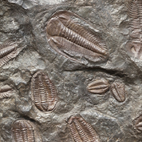
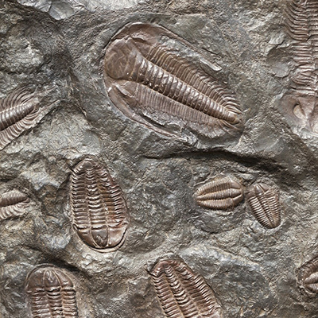
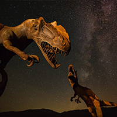
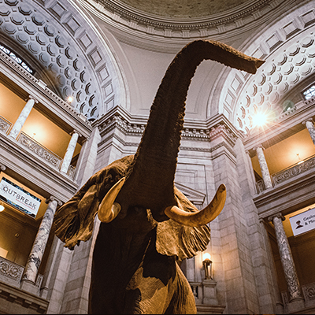
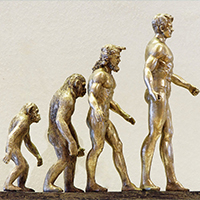
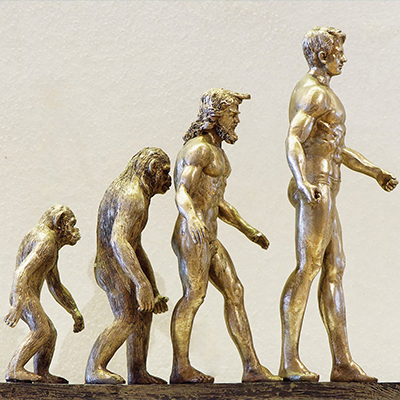
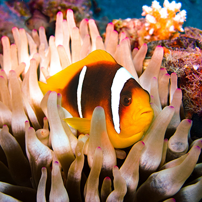
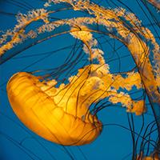
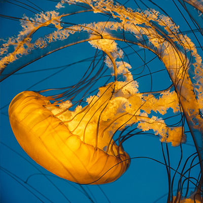

서대문자연사박물은 총 3개의 관으로 이루어져 있으며,
태초의 자연과 대자연의 역사 등을 만나보실 수 있습니다.
-
생명의 기원과 탄생
생명이 언제 어떻게 지구상에 나타났는가? 이것은 모두가 알고자 하는 수수께끼일 뿐만 아니라 철학이나 신학의 과제이기도 한 매우 어려운 문제입니다. 오늘날 생명의 기원에 관한 과학자들의 견해는 생물이 무생물에서 진화, 발전해 왔다는 것입니다. 40억 년 전 이미 지구상에는 바다와 대기가 있었습니다. 과학자들은 무생물에서 생물이 진화되는 과정은 대략 그 무렵부터 시작되었다고 봅니다. 생물학적 진화 가운데 비교적 그 역사가 잘 해명되어 있는 것은 6억 년 전 이후입니다.
-

고생대

- 생명의 진화와 출발 -
생명이 언제 어떻게 지구상에 나타났는가? 이것은 모두가 알고자 하는 수수께끼일 뿐만 아니라 철학이나 신학의 과제이기도 한 매우 어려운 문제입니다. 오늘날 생명의 기원에 관한 과학자들의 견해는 생물이 무생물에서 진화, 발전해 왔다는 것입니다. 40억 년 전 이미 지구상에는 바다와 대기가 있었습니다. 과학자들은 무생물에서 생물이 진화되는 과정은 대략 그 무렵부터 시작되었다고 봅니다. 생물학적 진화 가운데 비교적 그 역사가 잘 해명되어 있는 것은 6억 년 전 이후입니다.
-

중생대
- 공룡의 세계 -
태양계가 속해 있는 우리 은하의 크기는 지름 10만 광년, 중심 두께 3,000 광년이며 위에서 보면 바람개비 모양의 나선구조를 하고 있습니다. 그 중 태양계는 은하 중심으로부터 약 3만 광년 떨어진 변두리에 위치해 있으며, 태양이라 불리는 별과 8개의 행성, 각 행성의 위성들, 수많은 혜성, 소행성 및 유성체들, 그리고 행성간 매질을 포함하고 있습니다. 이 시대에는 해양 무척추동물인 암모나이트류도 번성하여 중생대를 암모나이트 시대, 파충류 또는 공룡시대라고도 합니다.
-
신생대

- 포유류 전성기 -
신생대는 6500만 년 전부터 현세에 이르는 지질시대의 마지막 시기로서 포유류의 시대라 할 수 있습니다. 중생대의 육지와 바다 및 공중을 지배한 공룡·어룡 ·익룡은 백악기 말에 절멸되어 신생대 초기 생태계에 큰 공백이 생긴 뒤, 포유류는 이를 이용하여 매우 빠른 속도로 진화하였습니다. 말, 코끼리, 코뿔소 등의 선조가 발전하였으며, 원시식충류로부터 진화된 영장류에서 인류가 출현하기도 하였습니다. 포유류 외에 조류, 경골어류 등이 본대에서 번성하였으며 식물에서는 속씨식물 등이 뚜렷한 번성을 하였습니다.
-
해양포유류
현재의 고래는 바다에 살았던 생물이 육상으로 진출하여 진화하여 적응했다가 다시 육상에서 바다생활에 적합하도록 진화한 것입니다. 크게 고래류, 기각류, 바다소류로 나눌 수 있는 다양한 해양포유류의 특징과 생태를 살펴 볼 수 있습니다.
-

인류의 출현

영장류가 나타난 시기는 약 7천만 년 전이며 동물분류학상 척색동물, 포유강, 영장목, 사람과에 속합니다. 영장목에는 원숭이, 침팬지, 고릴라, 오랑우탄 등이 있는데 사람이 이들과 가장 다른 점은 뇌가 발달하였고 털이 없으며 엄지손가락이 다른 손가락과 마주할 수 있어 도구를 사용하는 것이 가능하다는 것입니다. 가장 오래된 인류의 직계조상인 호모 하빌리스의 모형부터 호모 사피엔스의 모형이 전시되어 있어 인류의 진화단계를 쉽게 이해하실 수 있습니다.
-
육상생명의 다양성
육상에는 생태계를 이루는 다양한 생명들이 있습니다. (포유류, 조류, 양서/파충류, 곤충)
-
해양생물의 다양성

가장 단순한 다세포생물인 해면동물부터 척추동물인 어류까지 바다에서 우리가 쉽게 볼 수 있는 다양한 해양생물을 전시하고 있습니다. 부드러운 몸을 보호하는 딱딱한 껍질을 갖고 있는 연체동물, 구부러지는 다리를 갖으며 딱딱한 외골격이 있는 갑각류, 가시가 있는 극피동물, 바다의 나무처럼 보이는 산호와 둥둥 떠다니는 해파리 무리인 자포동물은 연골어류인 상어류를 비롯한 다양한 물고기와 함께 바닷 속 수중 생명의 다양성을 이루고 있습니다.
-

살아있는 해양생물

우리나라 삼면의 바다에 서식하는 다양한 해양생물을 직접 현장에서 채집하여 전시하는 공간으로 우리에게 친숙한 어류뿐만 아니라 무심코 지나칠 수 있는 해양무척추 동물을 자세히 관찰할 수 있도록 하였습니다. 전시장내의 해양생물코너에 있는 연체동물, 갑각류, 극피동물, 자포동물이 살아있을 때의 모습을 직접 관찰해 볼 수 있습니다.